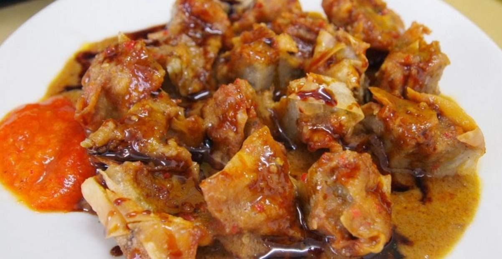

|
Berbagai daerah di indonesia mempunyai
beranekaragaman masakan tradisional yang telah lama berkembang secara spesifik disetiap daerah khususnya di daerah sunda. Daerah sunda sendiri memiliki keanekaragaman masakan yang lezat dan enak.Oleh karena itu website ini dibuat untuk memperkenalkan aneka masakan tradisional khas sunda. . |
 |